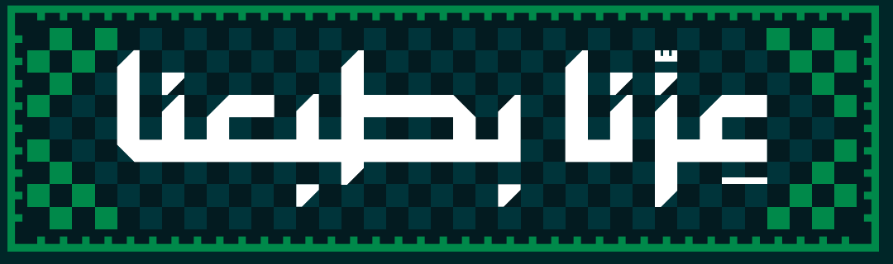
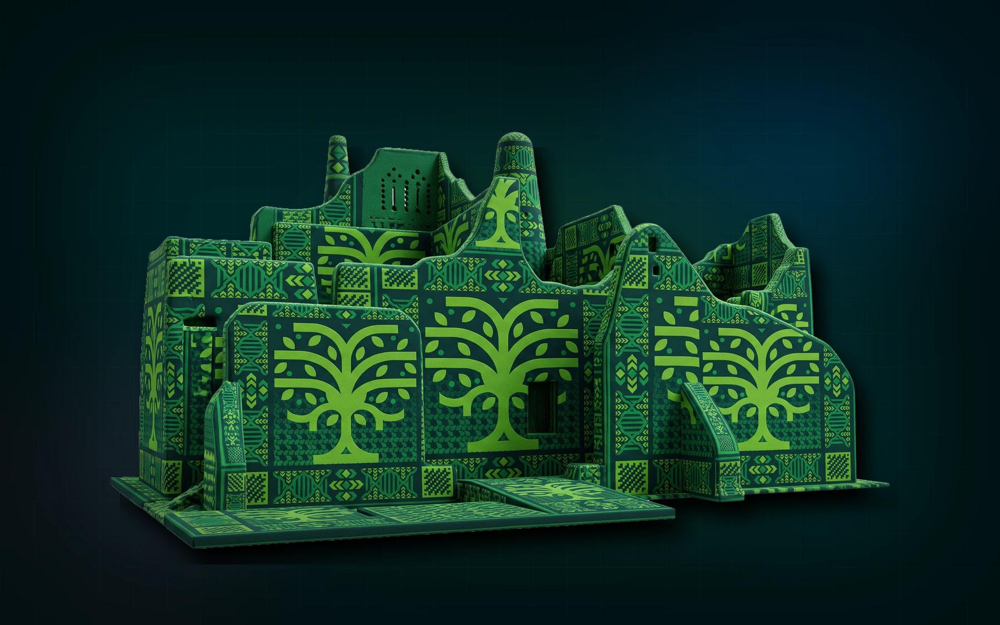

قصة جمعت مناطق المملكة تحت اسمٍ ورايةٍ واحدة.

جاري تحميل الخريطة...
اكتشف
المملكة
من طبع إلى طبع
لكل منطقة روح، وبصمة، وشواهد، وحكاية صنعت جزءًا من ذاكرة المملكة. اختر المنطقة من الخريطة وادخل مباشرة إلى قصتها.
قصة وطن
عن اليوم الوطني السعودي 96
في 23 سبتمبر من كل عام، تستعيد المملكة ذكرى توحيدها وإعلان اسم المملكة العربية السعودية عام 1932م على يد الملك عبدالعزيز بن عبدالرحمن آل سعود. ويأتي اليوم الوطني 96 امتدادًا لقصة وطنٍ يعتز بهويته، ويبني مستقبله بثقة وطموح.
13
منطقة
96
عامًا من المجد
2030
رؤية وطن
تراث متنوع يظهر في العمارة والحِرف وذاكرة المكان.
طموح يستثمر في الإنسان والمكان ويواصل رحلة التطور.
فخر
13 حكاية، وطن واحد.
من كل منطقة تبدأ حكاية وبكل حكاية يكتمل الوطن.

01
الرياض
هنا تمتد الهمّة.
02
روح المنطقة
03
بصمة المكان
ملامح لا تشبه سواها
04
شواهد لا تُنسى
أماكن تحفظ ذاكرة المنطقة
05
أحداث صنعت التاريخ
06
ذاكرة المكان